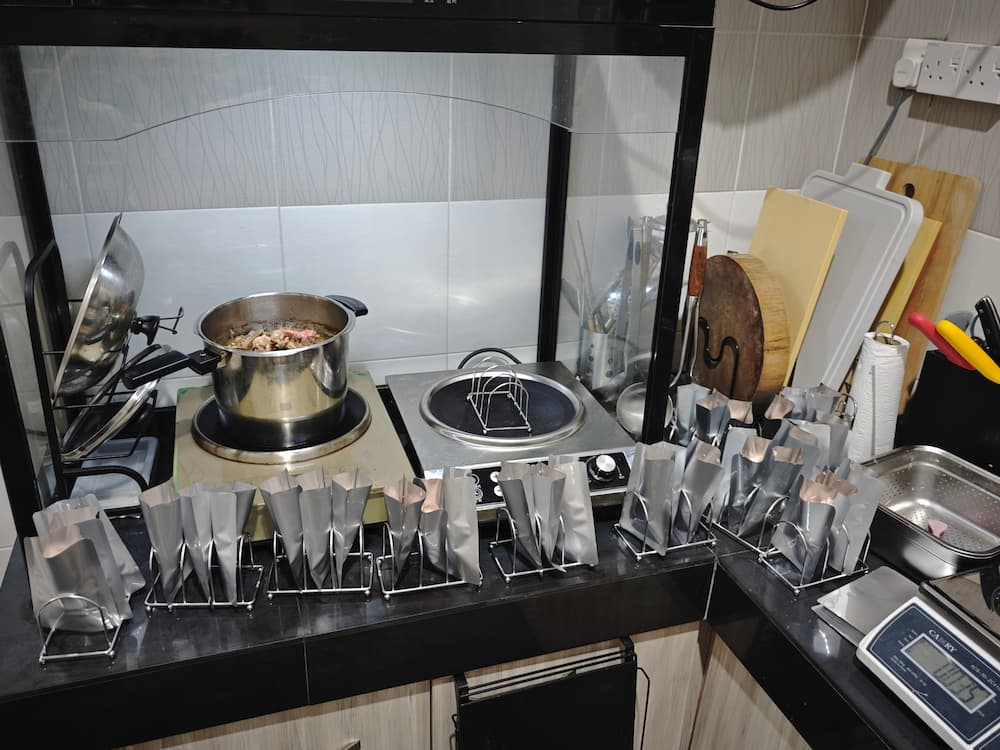

我们只用本地鸡、本地鸭。
汤底不是水兑出来的——是本地鸡壳、鸭壳，加本地海味，慢火熬煮而成的原汤。骨头里的鲜味、海味里的甘味，都留在这碗汤里，才拿来调理成猫能吃的一餐。
没有远洋进口的噱头，没有听不懂的成分表。就是本地的鸡、本地的鸭、本地的海味，熬给猫看的一碗汤。
Retort 是一种高温高压杀菌工艺——把煮好的猫粮密封进包装后，整包放进高温高压环境处理，让包装内外都达到无菌状态。
好处是：不需要额外加防腐剂就能常温保存、开封即食，同时锁住食材本身的水分和风味，不像风干粮那样流失营养，也不像普通湿粮罐头那样容易在杀菌过程中把口感煮老。
简单说：这是让「新鲜」跟「安全」可以同时成立的做法。